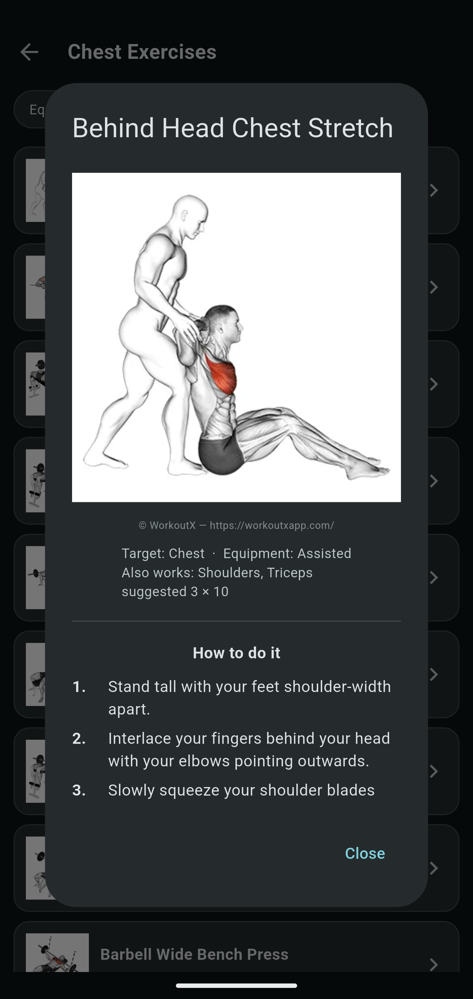
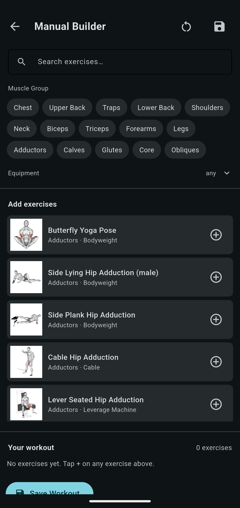

Screens






A tool for finding the next exercise, not logging the last one — browse a full library by muscle group, generate a routine by rule or by AI, or build one by hand.
The idea is simple: after running the same routine for a while, I want fresh alternatives, not another app to log the same reps in. Freeletics got closest to what I wanted, but only its workout builder — bodyweight moves, band variations, that kind of variety. The tracking half never interested me, since a watch already does that job, so there's deliberately no start-workout or logging screen here.
It's also where the engine changed: Kivy gave way to Flet, which comes with far more modern UI building blocks out of the box. The first version was plain — a small, hand-picked exercise list grouped by muscle group. The real work started once I went looking for an exercise database worth building on, and separately, for a body model that could actually be pulled apart into regions a person could tap.
Tap a muscle, front or back, and see every exercise that targets it — sourced from the WorkoutX API. Finding a body model that could be split into clickable regions in the first place turned out to be the harder half of this.
Rule Builder for manual control — muscle groups, equipment on hand, exercise count, how many variations. AI Coach for an open request, handled by whichever engine is connected.
Wiring AI into the app meant exploring on-phone inference — Gemini Nano runs the coach fully offline, alongside a cloud Gemini fallback for phones the on-device model doesn't support.

